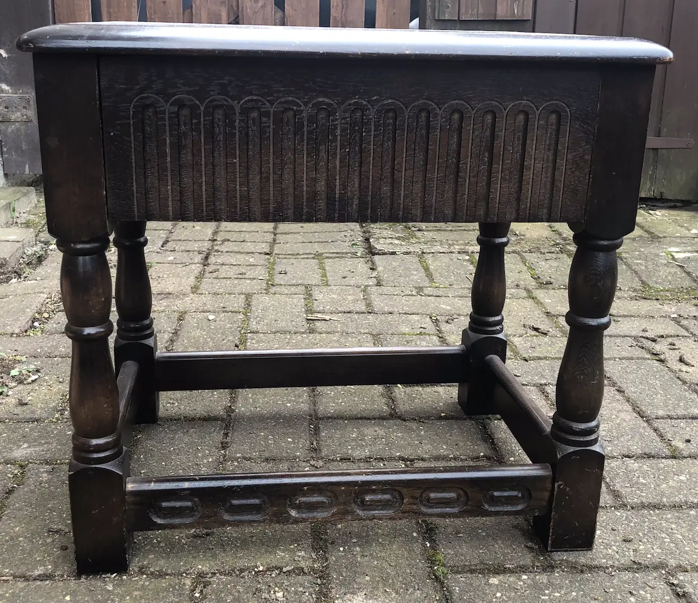
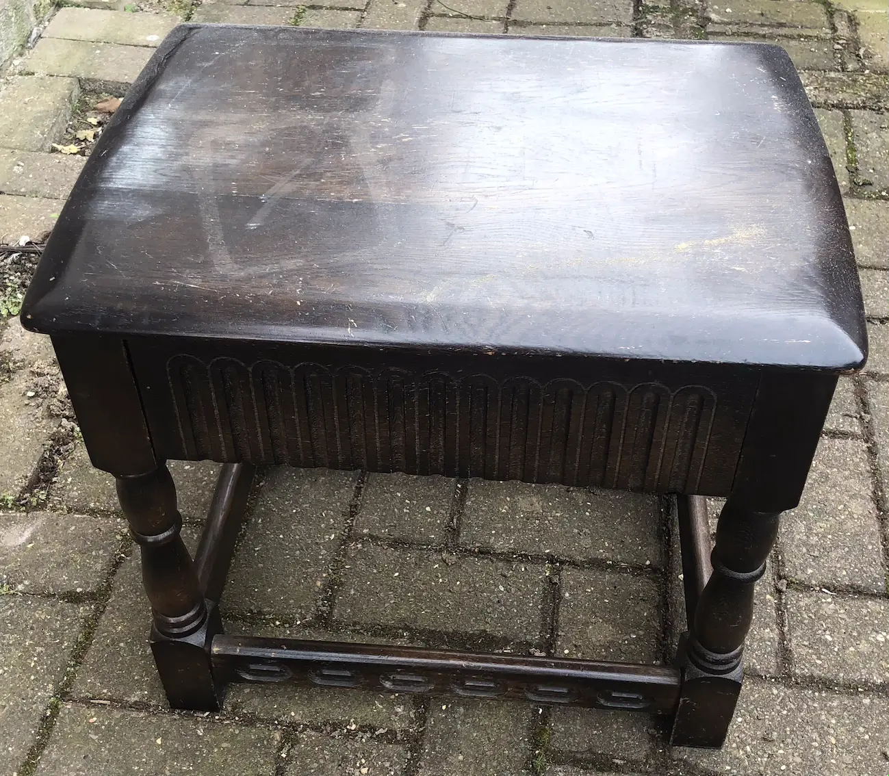
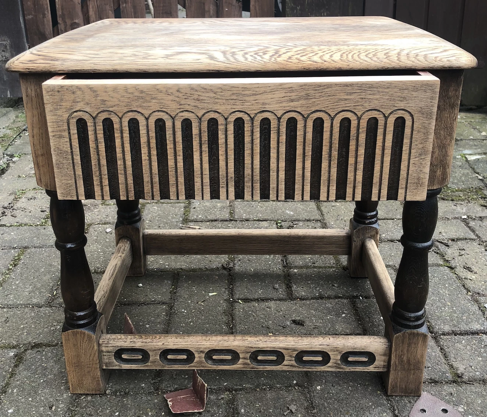
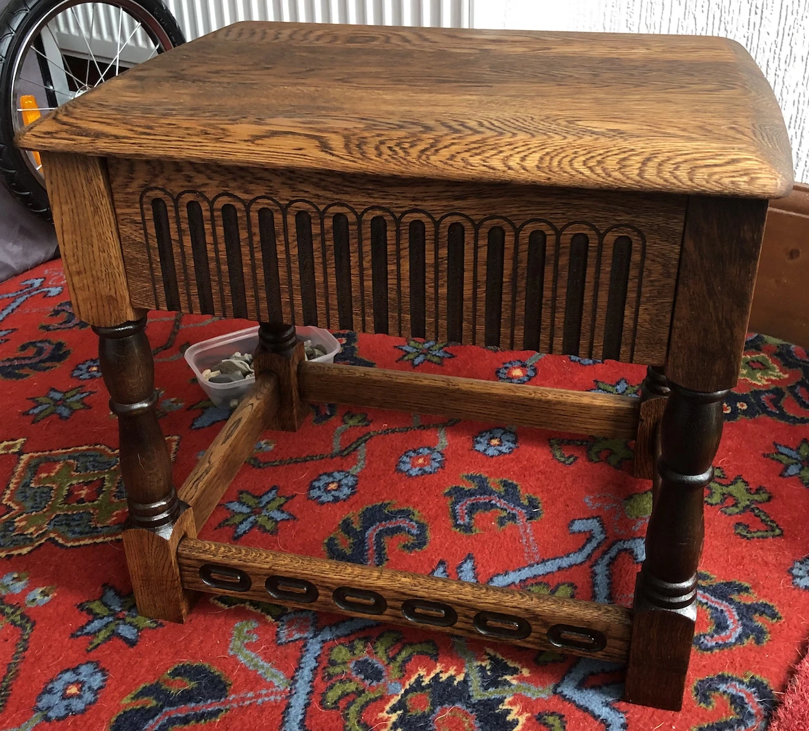

Refurbishing Old Furniture
This isn't my first rodeo. Refurbishing furniture is a long-held hobby, but I won't go into the details of the things that have been rescued and processed before. This will cover new stuff.
The most recent item requiring attention was acquired at a small price from the local RSPCA charity shop. Fortunately it wasn't too bulky or heavy to carry home, even when I had one of the dogs accompanying me. Although there was a little bit of cussing by the end of the walk.
 
Most of my restoration projects have involved tables so you'd think I'd have enough by now. However, this one has a small drawer in it and could be deployed in the hallway as a telephone table.
When purchased the condition seemed reasonable. It was mostly the colour that didn't suit my needs. Then, on closer examination and after time by the front door awaiting refurbishment, I realised that the table top was discoloured and marked.
The first step is always sanding the item down to the bare wood. This time I decided not to remove the old varnish from the carved details or the rounded parts of the table legs. Obviously, this wasn't due to laziness on my part. Or the need to sand these areas by hand and risk losing my thumbprints and thus the ability to authenticate apps on my phone. Oh, no. I thought the contrasting wood colours would be aesthetically pleasing.
Sometimes I varnish or wax my projects. This time I opted for oiling. It conditions the wood and I don't need to be quite so careful about my technique or things getting stuck to the surfaces. That's become increasingly necessary now we have moulting animals running around the house...and it's not just the dogs I'm referring to. The children seem to shed a lot of hair too!
With just a couple of coats of danish oil, I was done. While I don't care for the aroma, the smell does dissipate reasonably quickly.
And I think it does a good job.